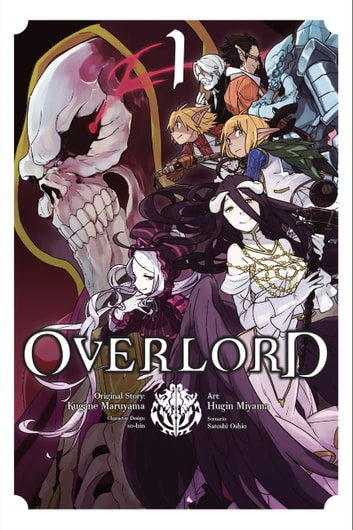

About

Overlord (Japanese: オーバーロード, Hepburn: Ōbārōdo) is a Japanese light novel series written by Kugane Maruyama and illustrated by so-bin.
It began serialization online in 2010, before being acquired by Enterbrain. Sixteen volumes have been published since July 2012.
A manga adaptation by Satoshi Ōshio, with art by Hugin Miyama, began serialization in Kadokawa Shoten's manga magazine Comp Ace from November 26, 2014.
Both the light novels and the manga are licensed in North America by Yen Press since 2016.
The novel has been adapted into an anime television series adaptation by Madhouse, consisting of four seasons with thirteen episodes each, with the first season airing from July to September 2015.
Two compilation anime films recapping the events from the first season were released in Japan in February and March 2017, respectively.
The second season ran from January to April 2018, the third season ran from July to October 2018, and the fourth season ran from July to September 2022. An anime film has been announced.